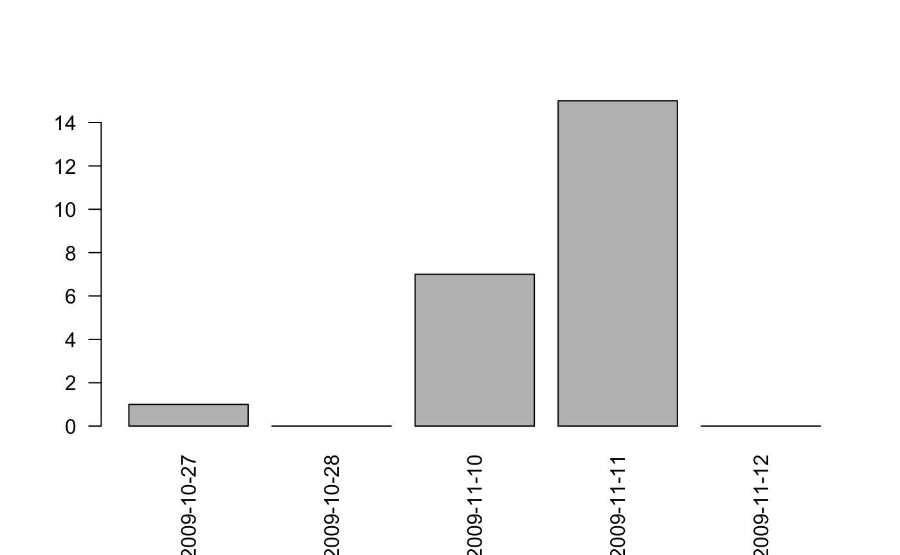

vignettes/GermaParl.Rmd
GermaParl.RmdParliamentary debates convey the arguments, interpretations and contestations that shape political decision-making. They are recorded and transcribed by parliamentary administrations with diligence, and published as plenary protocols. These documents are available for long periods of time – for several decades and more – and they cover the full breadth of topics that is processed by a political system: Plenary protocols are a valuable resource for research on policy and politics, and for citizens. They are a crucial building block of the public digital archive of democracy.
The digital availability of plenary protocols is excellent and limited at the same time. Documents can be downloaded without technical or legal restrictions as txt, html or pdf documents. But this data format does not match the requirements for digital-era data processing. To exploit the analytical potential of the data, original documents need to be converted into a semi-structured data format (typically XML). The GermaParl corpus as it has been prepared in the PolMine Project implements this notion and is based on an XMLification of txt and pdf documents. The aim is to make a contribution to the broader development of preparing corpora of plenary protocols – the naming of GermaParl is inspired by the EuroParl and DutchParl corpus, see Marx & Schuth 2010. GermaParl is intended to serve as an example how to make corpora available in a sustainable way, meeting the technological standards and requirements of the digital era.
GermaParl is made available in two ways:
The base format of the corpus is a XMLification of the raw data (i.e. the original protocols) that is modelled on the standards of the Text Encoding Initiative (TEI). Releases of the TEI format of GermaParl are available via the GermaParlTEI repository at GitHub. It results from an automized, fully reproducible pipeline, i.e. raw protocols (pdf and txt file format) have been turned into an XML/TEI-based standard.
A linguistically annotated, indexed and consolidated version of the corpus is included in the GermaParl R data package documented with this vignette. XML/TEI files serve the point of departure, but the version emanates from (a) performing some standard Natural Language Processing (NLP) tasks (such as tokenization, lemmatization, part-of-speech annotation); (b) importing the linguistically annotated data into the Corpus Workbench (CWB) and (c) consolidating the data in a set of postprocessing tasks to remove known errors. The steps of the annotation/indexing/consolidation workflow are documented, ensuring full reproducibility, with the vignette “GermaParl - From XML to CWB” included in this R data package.
The corpus includes all plenary protocols that were published by the German Bundestag between 1996 and 2016. Plain text documents issued by the German Bundestag were considered the best raw data format for corpus preparation and were used whenever they are available. For a period between 2008 and 2010, txt files are not available throughout. To fill the gap, pdf documents were processed. The following sections explain corpus preparation and the data made available with this package in some more detail.
The preparation of the TEI version of GermaParl implements the following workflow:
Preprocessing: Prepare consolidated UTF-8 plain text documents (ensuring uniformity of encodings, conversion of pdf to txt if necessary);
XMLification: Turn the plain text documents into TEI format: Extraction of metadata, annotation of speakers etc.;
Consolidation: Consolidating speaker names and enriching documents.
The preprocessing step is not as trivial as it might seem. Older plain text files are offered by the German Bundestag in all kinds of encodings that are have come out of use. The pdf documents have a two-column layout that is difficult to handle. Experience to handle these issues is captured by the respective functionality that is included in the R package ctk. For handlung the two-column layout of pdf documents, the R package trickypdf has been developed.
The essential instrument for the XMLification is a set of regular expressions to extract relevant metadata (such as legislative period, session number or date), to find the beginning and the end of a debate, the call upon the speakers, and the beginning and end of agenda items. The matches are used to generate the structural annotation of parliamentary speech in the XML document.
Due to the remaining haphazard variations that occur in plenary protocols, the quest is not for a universal battery of regular expressions that would always work without manual checks. Even though it introduces an element of manual work, our solution is to work with lists of mismatches (matches of regular expressions to omit), in combination with a brute-force preprocessing (hard-coded substitutions) that correct obvious errors that are already included in the original version of plenary protocol.
The result of the base XMLification still includes considerable noise. Inconsistencies that occur with names are a particularly serious issue. To obtain consolidated metadata, information that has been extracted is checked (including approximate string matching) against an external data source. We opted for lists of members of parliamentarians, cabinet members and further speakers that are available on Wikipedia (see the page for the 17th Bundestag, for instance).
Easy digital access is not the only justification for this choice. Wikipedia pages for the parliamentary sessions are being taken care of by a team of dedicated volunteers. Furthermore, Wikipedia pages meet permanent public scrutiny, ensuring quality checks on the data quality in a manner traditional printed material does not necessarily ensure.
The code for corpus preparation is wrapped in a R package, and upon preparing a corpus, the version number of the package used is included in the TEI metadata, so that the corpus preparation is fully transparent and reproducible.
The XML/TEI version of GermaParl is taken through a pipeline of standard Natural Language Processing (NLP) tasks. Starting with version 1.1.0, Stanford CoreNLP is used for tokenization and part-of-speech (POS) annotation. To add lemmas to the corpus, the TreeTagger is used. A full (technical) documentation of the linguistic annotation of the corpus is included in the vignette “GermaParl - From XML to CWB” and not reproduced here.
Note that the TreeTagger outpus #unknown# if it cannot successfully lemmatize a wordform. See the tables in the annex to learn about the unknown ratio in the corpus.
Moving to Stanford CoreNLP as the base annotation tool will be the basis for adding further annotation layers to the corpus (such as an annotation of sentences, or named entities) in the future.
In the XML/TEI data format, all passages of uninterrupted speech are tagged with metadata, or so-called structural attributes (s-attributes). For instance, parliamentary speeches are often interrupted by interjections - the information whether an utterance is an interjection or an actual speech, is maintained in the corpus. The legislative period, session, date, name of a speaker and his/her parliamentary group are included, among others. The structural annotation is the basis for all kinds of diachronic or synchronic comparisons users may want to perform.
The following table provides short explanations of the s-attributes that are present in the GermaParl corpus.
| s-attribute | description | values |
|---|---|---|
| lp | legislative period | 13 to 18 |
| session | session/protocol number | 1 to 253 |
| src | source material for data preparation | txt or pdf |
| url | URL | URL of the original document |
| agenda_item | agenda item | number of the agenda item |
| agenda_item_type | type of agenda item | debate/question_time/government_declaration/… |
| date | date of the session | YYYY-MM-TT (e.g. ‘2013-06-28’) |
| year | year of the session | 1996 to 2016 |
| interjection | whether contribution is interjection | TRUE/FALSE |
| role | role of the speaker | presidency/mp/government/… |
| speaker | Name | speaker name |
| parliamentary_group | Parliamentary group | partliamentary group the speaker is affiliated with |
| party | Party | party of the speaker |
The GermaParl data package that includes the CWB indexed version of the corpus is hosted at a private CRAN-style package repository on the Web-Server of the PolMine Project. The polmineR-package offers a convenient installation mechanism.
library(polmineR)
if ("drat" %in% rownames(available.packages()) == FALSE) install.packages("drat")
drat::addRepo("polmine") # lowercase necessary in this case
if ("GermaParl" %in% rownames(available.packages()) == FALSE){
install.packages("GermaParl")
}After installing the GermaParl package, the package only includes a small subset of the GermaParl corpus. The subset serves as sample data and for running package tests. To download the full corpus, use a function to download the full corpus from an external webspace (amazon AWS, for the time being):
To check whether the installation has been successful, run the following commands. For further instructions, see the documentation of the polmineR package.
## ... activating corpus: GERMAPARLMINI## corpus size template
## 1 GERMAPARLMINI 222201 TRUE
## 2 REUTERS 4050 TRUEThe CWB indexed version if GermaParl can be used with the CWB itself, or with any tool that uses the CWB as a backend (such as CQPweb). However, most technical decisions during corpus preparation had in mind to optimise using the GermaParl corpus in combination with the polmineR package. Please consult the documentation of the polmineR package (README, vignette, manual) to learn how to use polmineR for working with GermaParl. Here, we can only offer a very brief tutorial for basic commands. Note that in the following examples, we will use GERMAPARLMINI to illustrate functions, as the full GERMAPARL corpus will only be available after the full installation of the corpus.
First, you may want to learn about the p-attributes (positional attributes), and s-attributes (structural attributes) that are available.
## [1] "interjection" "date" "party" "speaker"## [1] "word" "pos"To learn about the values of s-attributes, specify the param s_attribute:
## [1] "2009-10-27" "2009-10-28" "2009-11-10" "2009-11-11" "2009-11-12"## [1] "NA" "CDU_CSU" "SPD" "FDP"
## [5] "DIE_LINKE" "B90_DIE_GRUENEN"To inspect keywords-in-context (KWIC), use the kwic-method:
K <- kwic("GERMAPARLMINI", query = "Integration")
if (interactive()){
K
} else {
knitr::kable(as.data.frame(K), format = "markdown")
}| left | node | right |
|---|---|---|
| Es ist eine Frage der | Integration | der Menschen , die in |
| hilft weiter . Bildung , | Integration | , solide Haushalte , generationengerechte |
| , die Bildung , die | Integration | , die Arbeitsmarktpolitik und die |
| mit Nachdruck : Auch die | Integration | der Zuwanderer und ihrer Kinder |
| wie wir im Bereich der | Integration | nachholen , was wir jahrzehntelang |
| ein Thema , das die | Integration | betrifft . Junge Menschen , |
| Deutschland und Frankreich die europäische | Integration | in der Substanz - also |
| Auf ihm hat die europäische | Integration | aufgebaut , und durch ihn |
| wird erwähnt , wie wichtig | Integration | , sozialer Zusammenhalt und Ressourcenschutz |
| in Wohnquartieren einschließlich der besseren | Integration | von Menschen mit Migrationshintergrund und |
| Migrationsbewegungen und zunehmender Vielfalt ist | Integration | eine Schlüsselaufgabe für uns alle |
| uns alle . Bei der | Integration | von Zuwanderern haben wir bereits |
| aber zu kurz gegriffen , | Integration | nur im Zusammenhang mit Zuwanderern |
| der Innenpolitik zu machen . | Integration | in einem umfassenden Sinne bedeutet |
| wirklich nicht getan ; denn | Integration | umfasst viele Bereiche , von |
| und vorurteilsfrei ist . Die | Integration | von Menschen mit Migrationshintergrund ist |
| Bildung und Ausbildung , für | Integration | in den Beruf , für |
| Rede . Wir brauchen verantwortungsbewusste | Integration | . Das bedeutet , jeder |
| der für das Gelingen der | Integration | verantwortlich ist , muss sich |
| . Wir werden die europäische | Integration | nicht als Bedrohung verstehen , |
| Das ist ein Schritt zur | Integration | ; darin liegt für Kinder |
| voranbringen und unsere Maßnahmen zur | Integration | von Jugendlichen durch Bildung und |
| Wie schaffen wir bes- sere | Integration | in und durch Bildung ? |
The count-method is used for counting. You can supply one or multiple queries:
## query count freq
## 1: Integration 23 0.0001035099## query count freq
## 1: Integration 23 1.035099e-04
## 2: Flucht 2 9.000860e-06
## 3: Abschiebung 1 4.500430e-06To get the dispersion of a query, use the dispersion-method.
Visualise the result as a barplot…

The cooccurrences-method will get you the cooccurrences of a query.
These are some if the core functions, applied to the whole corpus. The whole point of the structural annotation of the corpus (s-attributes) is to facilitate the creation of subcorpora / partitions. So every method that has been introduced can be applied to a partition.
lp16 <- partition("GERMAPARL", lp = 16)
count(lp16, query = c("Asyl", "Flucht", "Abschiebung"))
dispersion(lp16, query = "Flüchtlinge", sAttribute = "year")Finally, note that the methods of polmineR can also be used with the pipe functionality offered by the magrittr package.
library(magrittr)
cooccurrences("GERMAPARLMINI", query = "Europa") %>%
subset(!word %in% c(tm::stopwords("de"), ",", ".")) %>%
subset(count_window >= 5) %>%
dotplot()This is just a short glimpse into the analytical opportunities of using GermaParl in combination with polmineR. One of the most important aspects that cannot be explained here is the possibility to use the syntax of the Corpus Query Processor (CQP) that comes with the CWB backend. The as.TermDocumentMatrix method will prepare data structures efficiently needed for more advanced analytical techniques such as topicmodelling.Consult the vignette of the polmineR package to learn more!
A set of general remarks may help to avoid pitfalls when working with GermaParl:
Plenary protocols meticulously report interjections. To maintain the integrity of the original documents, interjections are annotated in the corpus. By using the s-attribute ‘interjection’ that assumes the values ‘TRUE’ or ‘FALSE’, you can limit your analysis to speech or interjections.
Plenary protocols report membership in a parliamentary group only. Information on party membership is derived from external data sources and written back to the corpus. More specifically, the s-attribute ‘parliamentary_group’ refers to the parliamentary group, ‘party’ refers to the party a speaker is a member of. To distinguish between CDU and CSU speakers, using the s-attribute ‘party’ is necessary.
The GermaParl corpus is a corpus of the debates and speeches that were actually given in the German Bundestag. Speeches that were only included in the printed protocol (i.e. included in the annex to a protocol) are not yet covered by corpus preparation.
GermaParl is not the only corpus of plenary protocols. Apart from PolMine, several further projects have worked on preparing respective corpora. There is an ensuing dialogue among these projects, and GermaParl strives to contribute to this broader development, trying to serve as a example how reproducibility and quality control can be maintained during all steps of corpus preparation, and how corpora can be disseminated in a manner that lowers the barriers of entry for new users.
The resource is under active development. Apart from improving data quality and preparing updates, one important concern is to add further annotation layers:
Moving to Stanford CoreNLP as the core tool for the NLP pipe (a step that has been taken with version 1.1.0) provides the basis for adding sentence annotation, and a basic annotation of named entities in the future.
There are many scenarios for using the corpus that require an ability to create classification-based subcorpora. Writing the results of an optimized topicmodel to the corpus as structural attributes is being prepared, and will relieve users from the cumbersome task of running multiple topicmodels. Given the size of the corpus, every run to train a topicmodel takes considerably time, and multiple models need to be trained to learn about the optimal number of topics.
Perspectively, classification based on a supervised learning approach will be superior to unsupervised learning. In a CLARIN-funded project, training data has been prepared to obtain the basis for a classification of debates according to a (somewhat expanded) classification scheme of the Comparative Agendas Project (CAP). An annotation of the hand-coded text passages will be included in the corpus.
Hopefully, GermaParl will make qualitative and quantitative research with German parliamentary debates more productive. A final note on user feedback: Improving data quality is an important concern of the PolMine Project. This is why the data is versioned. The resource will benefit from its community of users - feedback that helps to improve data quality is more than welcome!
While the raw data, the plenary protocols published by the German Bundestag, are in the public domain, the GermaParl corpus comes with a CC BY+NC+SA license. That means:
BY - Attribution — You must give appropriate credit, provide a link to the license, and indicate if changes were made. You may do so in any reasonable manner, but not in any way that suggests the licensor endorses you or your use.
NC - NonCommercial — You may not use the material for commercial purposes.
SA - ShareAlike — If you remix, transform, or build upon the material, you must distribute your contributions under the same license as the original.
See the CC Attribution-NonCommercial-ShareAlike 4.0 Unported License for further explanations.
If you work with GermaParl package, please include the following reference in your bibliography to attribute the language resource:
Blaette, Andreas (2018): GermaParl. Corpus of Plenary Protocols of the German Bundestag. R Data Package (v1.2.0). Available from: https://doi.org/10.5281/zenodo.1312551.
| lp | protocols | first | last | size | unknown |
|---|---|---|---|---|---|
| 13 | 163 | 1996-02-08 | 1996-02-08 | 11676618 | 0.050 |
| 14 | 253 | 1998-10-26 | 1998-10-26 | 19349263 | 0.062 |
| 15 | 182 | 2002-10-17 | 2002-10-17 | 12785509 | 0.056 |
| 16 | 233 | 2005-10-18 | 2005-10-18 | 18412812 | 0.052 |
| 17 | 252 | 2009-10-27 | 2009-10-27 | 23418060 | 0.056 |
| year | protocols | txt | size | unknown | |
|---|---|---|---|---|---|
| 1996 | 64 | 64 | 0 | 4480664 | 0.049 |
| 1997 | 62 | 62 | 0 | 4422019 | 0.050 |
| 1998 | 51 | 49 | 2 | 3523861 | 0.051 |
| 1999 | 65 | 65 | 0 | 5117808 | 0.052 |
| 2000 | 62 | 62 | 0 | 5035682 | 0.061 |
| 2001 | 69 | 69 | 0 | 5145527 | 0.071 |
| 2002 | 60 | 60 | 0 | 4426916 | 0.064 |
| 2003 | 66 | 65 | 1 | 4587196 | 0.055 |
| 2004 | 65 | 65 | 0 | 4808168 | 0.057 |
| 2005 | 43 | 39 | 4 | 2755203 | 0.055 |
| 2006 | 65 | 64 | 1 | 4942175 | 0.052 |
| 2007 | 60 | 59 | 1 | 4518292 | 0.052 |
| 2008 | 63 | 29 | 34 | 5071670 | 0.052 |
| 2009 | 49 | 0 | 49 | 4213853 | 0.055 |
| 2010 | 69 | 50 | 19 | 5984549 | 0.057 |
| 2011 | 68 | 68 | 0 | 6244475 | 0.055 |
| 2012 | 64 | 64 | 0 | 6172471 | 0.056 |
| 2013 | 44 | 44 | 0 | 4427191 | 0.054 |
| 2014 | 71 | 71 | 0 | 5404010 | 0.055 |
| 2015 | 69 | 69 | 0 | 5187762 | 0.057 |
| 2016 | 62 | 62 | 0 | 4544216 | 0.056 |
| TOTAL | 1291 | 1180 | 111 | 101013708 | 1.166 |
Starting from the 17th legislative period, txt versions of plenary protocols were retrieved from the homepage of the German Bundestag. The following table reports the URLs that have been used to download txt versions of older plenary protocols.